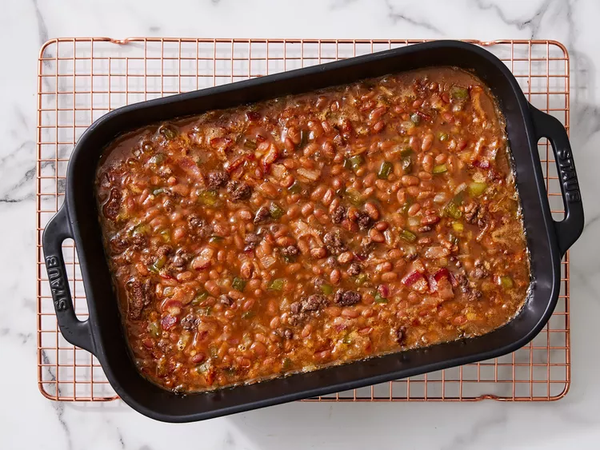

Southern Baked Beans

Description
Southern baked beans are the perfect side for pulled pork or ribs. They are easy to make and loved by all.
Ingredients
- 8 ounces lean ground beef
- 3 strips bacon, diced
- 1/2 cup diced yellow onion
- 1/2 cup green pepper
- 1/2 cup packed dark brown sugar
- 1/4 cup ketchup
- 1 tablespoon Worcestershire sauce
- 2 teaspoons yellow mustard
- 2 (28-ounce) cans baked beans
Steps
- Step 1: Gather all ingredients.
- Step 2: Preheat oven to 350 degrees F (175 degrees C). Cook ground beef on a large skillet over medium-high heat until browned, 5 to 8 minutes. Remove from skillet and reserve.
- Step 3: Cook bacon in the same skillet 5 minutes.
- Step 4: Add onion and green pepper to skillet. Cook, stirring frequently, until bacon is crisp and onion is translucent, about 5 minutes.
- Step 5: Add ground beef, brown sugar, ketchup, Worcestershire sauce, and mustard to the bacon mixture; stir until combined.
- Step 6: Add ground beef mixture and beans to a 13x9-inch baking dish, stir to combine.
- Step 7: Bake until bubbly, 40 minutes.
